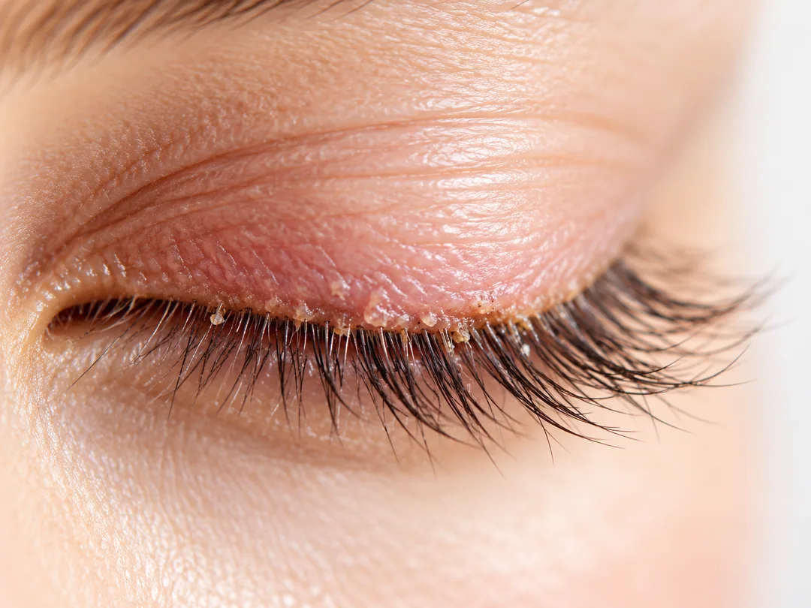
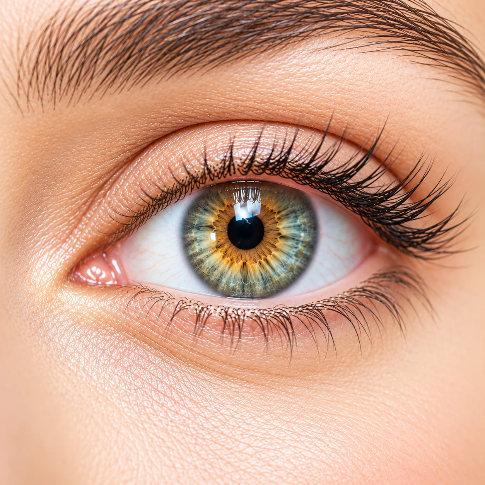

View profile ↗
View profile ↗ WELCOME TO THE SPANISH EYE CLINIC
Spanish Eye Clinic Dubai — LASIK, Cataract & Eye Care with Prof. Sakla
Our specialised and highly precise Lasik treatments and Cataract surgeries enable you to see superbly. Begin your journey to a clearer vision with us!
YOUR HEALTH IS OUR PRIORITY01
Dry Eye Treatment
Providing comprehensive Treatments and Diagnoses in the UAE that provides comprehensive dry eye treatment and diagnoses.
02
Expert and Personalized Treatments
We at Spanish Eye Clinic aim to educate and discuss the variety of vision treatment options with you.
03
For you in Laser Eye Surgery
Our surgeons are recognised and sought after for their expertise, and use technology at the forefront of Ophthalmology.
04
Quality Eye Clinic in the UAE
We are committed to rigorous attention to detail and consistently deliver excellent results, backed up by research and independent reviews.
A MOMENT OF CLARITY
01 / ABOUT SPANISH EYE CLINIC
Care built around your vision.
At Spanish Eye Clinic, we make our patients the priority. We don’t believe you should make any compromises in terms of your vision. We offer unmatched treatment and care at a reasonable cost.
You can visit our clinic and consult with our professional and trained staff. The treatment and procedures are performed on-site to ensure your comfort and convenience. We use state of the art technology and the unmatched experience and expertise of our specialist eye surgeons, and our patients are offered many choices to correct vision problems ensuring possible results.
02 / EXPERT EYE CARE
Expert and Personalized
Treatments
Explore our specialities — each offering a different approach to eye care.
View All Services ↗01 / 12
LASIK
Lasik treatment will improve your vision greatly so that you don’t have to rely on glasses or contact lenses.
Explore treatment ↗02 / 12
Cataract
Cataract is common in people as they age due to changes that occur in the lens proteins.
Explore treatment ↗03 / 12
Dry Eye Treatment
Dry eye disease is a chronic condition characterized by the lack of moisture and insufficient lubrication in the eye.
Explore treatment ↗04 / 12
Keratoconus
Keratoconus is an eye disease which results in thinning of the cornea.
Explore treatment ↗05 / 12
Presbyopia
Presbyopia is the loss of near focusing ability which occurs with age.
Explore treatment ↗06 / 12
Amblyopia
Amblyopia or “lazy eye” is a disease in which eye falls to achieve normal vision even with the help of sunglasses or lenses.
Explore treatment ↗07 / 12
Diabetes Complications
People who have diabetes can experience different eye problems due to the damage of blood vessels in eyes.
Explore treatment ↗08 / 12
Eye Allergies
Eye allergies are caused by the same irritants that cause sneezing and a runny nose and other symptoms.
Explore treatment ↗
09 / 12Blepharitis
Blepharitis is inflammation of the eyelids, particularly lid margins - the part of the eyelid where the eyelashes grow.
Explore treatment ↗10 / 12
Glaucoma
Glaucoma is a condition which causes damage to eye’s optic nerve.
Explore treatment ↗11 / 12
Pediatric Ophthalmology
Common eye problems in children include strabismus, chalazion, amblyopia, and refractive errors such as myopia and hyperopia.
Explore treatment ↗12 / 12
SMILE Laser Correction
Clear vision is essential for virtually everything – our work, our daily activities, our quality of life as such.
Explore treatment ↗
03 / KNOWLEDGE & AWARENESS
Did You Know?
01
Dry Eye Treatment
Providing comprehensive Treatments and Diagnoses in the UAE that provides comprehensive dry eye treatment and diagnoses.
02
Cataract
Cataract is one of the most common eye diseases around the world. It mostly occurs in people over 40 years of age.
03
Presbyopia
The technique which is called monovision can correct vision problems caused by presbyopia.
04
Glaucoma
Glaucoma is a disease which can cause a permanent vision loss and that there is no cure for it.
04 / OUR SPECIALISTS
Meet Our Specialists.


06 / LIFE AT SPANISH EYE CLINIC
Our Gallery.


08 / OUR NETWORK
Our Insurance Partners.